Correcting Common Stroke Errors¶
Correcting Common Stroke Errors
Dr. Jack Groppel
In my first article for TPA, I'm going to show you the most common tennis stroke errors I've seen as a working biomechanist and coach for the last 20 years. And we're going to talk about how you can correct them, by simplifying your strokes. If you can simplify your strokes and start making fewer

Video demonstration — the original video for this article was hosted on TennisPlayer.net.
Click Photo to listen to Dr. Jack talk about the significance of errors. Y ou're going to enjoy yourself even more on the court.
Before we get to the stroke errors, let's understand some general principles about winning matches and how they relates your strokes. First, tennis matches are won on errors, not on winners. Players usually think that to win a match, they've got to hit one great shot after another. But that's not the case. The fact is, 90% of all tennis matches are won because the person who lost made more mistakes. And that's true whether you're a beginning player or a touring pro.
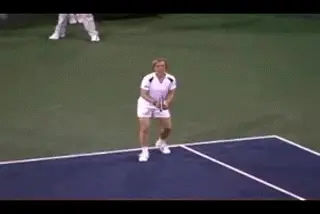
Even at the Grand Slam level, it's the errors not the winners that decide matches.
Here's just one example from a classic match in women's tennis history: the 1987 French Open in which Steffi Graff defeated Martina Navratilova. Graff hit 38 winners to Navratilova's 35. So you might then think that Steffi won because she hit three more winners. But Navratilova hit seven more unforced errors than Graff. That's a total of 10 points difference in the match, and 70% of that total came from Navratilova's unforced errors. Eliminate 7 of her errors and Martina probably wins the match instead. So if unforced errors are this important for the great players in great matches, you can imagine how important it is for the rest of us to decrease the number of mistakes we make.
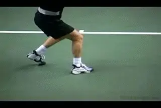
\ Power starts with the legs and passes upwards to the hips and the trunk.The second fact I want you to understand is that most tennis players make their strokes much too difficult and complex. They do this by relying on their hand too much. This is where most of the common errors I see come from.
[[Tennis is not really a sport you play with your hand. Tennis is a lower body sport, and a sport played with the larger body segments.] [The role of the hand in the strokes is mostly to control the racquet face, not to provide power. Power comes from the larger body parts, the legs, the hips and the trunk. If you can simplify your strokes and use all your body segments correctly, you will dramatically reduce your errors.]]
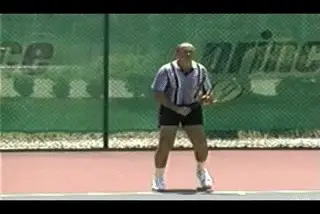
When you prepare with your body your arm comes along for the ride.
GroundStrokes
[One of the easiest ways to simplify your strokes is to watch how good players prepare for and then execute their groundstrokes. Here is the key. Notice how I am preparing with my whole body, not just my hand and arm]. When you prepare with your body, your arm just comes along for the ride. It's a very rhythmic, relaxed motion, where everything turns as a unit and the hand is used merely to control the direction of the racquet. It's a simpler motion that will also produce much more power naturally.
[Some players prepare by moving their shoulders just a little bit and then their arm takes over.] [And some players leave their shoulders completely out of the process. [When that happens, you contract the muscles of the arm and hand to take the racquet back, the rhythm between the arm and the body is lost, and the arm will not be able to control the racquet nearly as well.]]
Many players have too little shoulder and too much arm in their preparation.
Everything should turn smoothly as a unit. [[The arm follows the shoulder back and when it finally reaches the point where it has overcome the inertia of the arm and racquet, it will prepare the racket smoothly and easily.] [So prepare with your body.]]
The next way to simplify your shots is to learn how to use your body's kinetic chain properly. The body should act like a linked system, much like a series of chain links, one connected to the other. Force is first created by his legs against the ground. That force is transferred upward through his hips, which begin to rotate, then up to his trunk and shoulders and finally to the racquet arm.
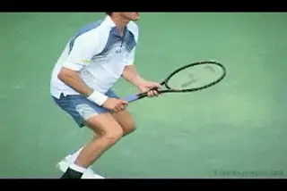
Great tennis strokes are fluid, precise, and effortless.
It's a very fluid motion and one that must happen in a precise and timely way. If you use your large body parts correctly, your legs and hips and trunk, your arm will quite naturally and effortlessly come along for the ride.
[If you leave the large body parts out of the swing, you are forced to overcompensate with your arm. Rhythm is lost and you can lose control of the racquet face.]
[If you have poor timing between your body parts, you'll also experience problems in your overall swing. For example, if you try to move all your parts at once, your swing will look and feel awkward, and your shots won't go where you want them to.]
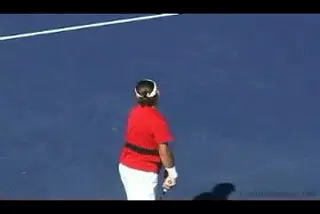
Efficiency generates effortless power.
[You'll also have difficulties if all your body parts are used, but not completely or sufficiently. As] [a result, the shots will tend to land short]. By learning to use your body's linked system in a precise, rhythmic order, with good timing and with the right amount of energy, all of these difficulties can be avoided. And most importantly, you'll be using your body's forces as effectively as possible to deliver powerful, well-controlled shots. This is why Roger Federer is so deceptive to watch. He appears to generate power and spin almost effortlessly. This is because he uses his entire body so efficiently.
Common Errors
If you know how to use your body's linked system, you should be hitting perfect shots every time, right? Sorry, no matter how good you are, you'll still have to contend with errors in your strokes. And in over 20 years of teaching the game, I've seen plenty of errors.
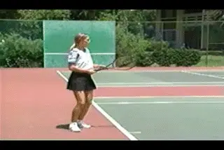
Watch the arm swing overcompensate for the body.
[Two of the most common errors I see in the forehand are using just the arm to generate power and second, pulling out of the shot.] Using the arm to generate power is a very common forehand error, particularly among beginning players. These are players who have grown up believing that tennis is an arm sport, not a body sport.
Watch how our player swings her racquet. It's mostly arm. She's not using her legs, her hips or her trunk. Her arm is overcompensating for the rest of her body and working much harder than it should. If your arm is providing that much power, it may be only a matter of time before you begin experiencing serious arm problems, not to mention the loss of control of the racquet face.
[Correcting this error is actually very easy. You need to learn to follow the natural rhythm of your body's linked system and how to use your whole body to generate power.] Remember, your arm is the last body part to act. First the legs move, then the hips, then the trunk and finally the arm. Like any learned motor skill, this motion will become second nature once you've practiced it enough to become automatic.
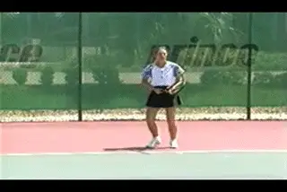
Many players overhit and pull out of the shot too soon.
The next forehand error we're going to discuss is pulling out of the shot too soon. This tends to happen when you overhit and when you're trying to gain more power. As a result, you open your stance too soon and your arm comes out prematurely. This breaks the natural rhythm of your swing. To make the linked system work, you must stay in the shot. This means keeping your arms in close to the body.
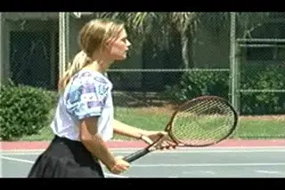
Arms in tight, grip light.
A final, very important point: you should also grip the racquet very lightly. When you hold the grip lightly, it prevents you from trying to over hit the ball. So, keep your arms in tight and grip light for compact, efficient strokes.
The Backhand
Trying to over hit the ball can cause real problems with all of your strokes, not just the forehand. Now let's look at what happens to your backhand when you over hit. We've got to remember that tennis is a game of control. If you don't have control, it doesn't matter how hard you hit the ball. Let's look at the one-handed backhand first. I see a lot of different errors but let's look at the most common one. This involves bailing out too soon with the front shoulder.
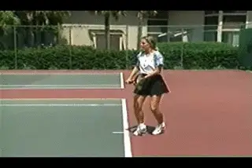
Lifting the shoulder destroys the plane of the swing.
Controlling your front shoulder is very important when hitting a one-handed backhand. That's because your racquet will automatically follow the path of your front shoulder. Many players will lift up their front shoulder when going for extra power. But as soon as you do that, you lose the proper plane of your swing and send the ball in a different direction.
Watch what happens when the player lifts the front shoulder. The racquet goes down. The line is no longer pointing at the ball. And the alignment of the shot is completely changed.
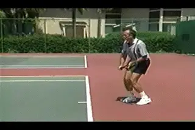
Imagine a line drawn between your shoulder pointing at the ball.
[When you control your front shoulder and keep that imaginary line pointing at the ball, your shot goes where you want it to.] To help correct this error, I teach players to imagine a line drawn between your shoulders. I teach them to keep that line pointed at the ball at all times. So when hitting a one-handed backhand, remember it's point, then hit, and then you can let your shoulder come up.
Two-Handed Backhand
Now I want to look at the most common error I see on the two-handed backhand. It's very common. Players tend to use their hands much too much in this shot. They try to get all the power they're looking for out of their hands, rather than their body.
Keep your arms in close, your hands quiet, and hold the racket lightly.
[For many players, the two-handed backhand becomes a very wristy shot and it shouldn't be.] Now I know on television you often hear about great players who disguise their shots and then hit at the last second with a flick of the wrist. And I know it sounds intriguing, but I believe that if you pick your shot and you hit your shot, you won't have to worry too much about disguising it.
So let's look at some of the problems caused by the "wristy shot." And I'll show you how to avoid them by hitting a correct two-handed backhand. A wristy shot makes you rely solely on your hands to generate power. Notice how our player swings so that there is very little use of her hips and trunk. She's not using her body's linked system. Also notice that her arms have gotten too far from her body. People who get too wristy, tend to have a problem with this and wind up overcompensating with their wrists at the last moment.
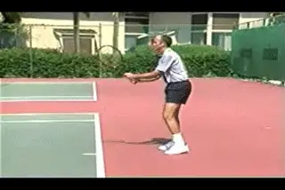
Practicing a left-handed forehand will help you cure a wristy two-hander.
[Here are two techniques to help players use their hands less in the two-handed backhand.]
The first is to keep your hands very quiet and hold the racquet like a feather. If you hold the racquet lightly, you can't generate power with your hands and that forces you to use your shoulders and the rest of your body.
Watch as now as the player swings, holding the racquet much more lightly, like a feather. She only squeezes when she hits the ball. Also notice that she's keeping her arms in very close to her body so that her shoulders can rotate.
The second technique is to place your racquet in your left hand and hit a left-handed forehand. If you swing correctly for the left-handed forehand, it's impossible to get wristy. Now just add your right hand and swing. That's how your two-handed backhand should feel.
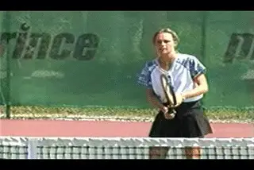
The most common volley error: two much movement with the hands.
The Volley
The volley is another shot where players tend to use their hands too much. In fact, the most common error I see in the volley is excessive arm action where players just don't get their body into the motion. All their movement is in the arm. There's no involvement of the shoulder. This puts unnecessary pressure on the arm and results in an ineffective shot.
Correcting this error is simply a matter of learning the full body motion correctly and then practicing it again and again. If you learn to put your body into your volley, you'll develop much more powerful and consistent shots. Here's how you do it.
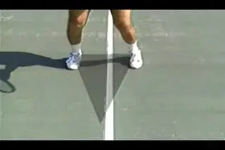
Turn, step to the top of the triangle, volley and return to the base.
[To perform a volley correctly, you first need to understand how to move your feet. Your feet form the base of a triangle.] In the ideal volley, you will turn, step to the top of the triangle, volley and then return back to the triangle base.
Watch the footwork and body movements. You begin in the ready position. Step forward to the top of the triangle. [Notice there's no movement in the arm yet.] Then your shoulder initiates the forward movement of the racquet. Finally your arm takes over to hit the ball in front of your body. [The important thing to remember is that the shoulder starts the motion and then the arm kicks in.]
If you're in a fast volley situation at the net, you have to set the hand first and then turn if you have time. But when time permits, follow the motions we've outlined here and you'll find that your volley will become a much more effective weapon.
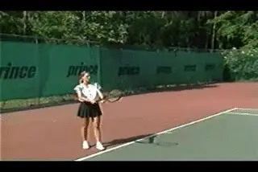
A poor backswing resulting in the "waiter's tray" position.
The Serve
Finally I want to talk about the serve. There are so many things that can go wrong with the serve. Sometimes I'm amazed at the contortions I see players going through. Because the fact is, serving doesn't have to be that hard. In fact, the most important part of the serve is actually a simple motion if you do it right. Like all the other strokes, it's very important in the serve that you use your whole body, moving in a natural rhythmic motion. But for many players, their serve looks anything but natural.
The most common error I see in the serve is a poor back swing. And the reason that happens is because, again, players are not using their bodies properly. So let me show you what I mean by a poor back swing and then I'll show you the easiest method I know for immediately improving your serve.
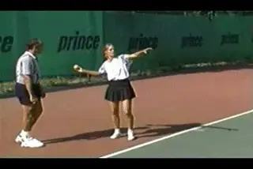
Throw upward and outward like a center fielder.
Watch as our player begins her serve, her back swing may look very relaxed, but watch what happens. Instead of sweeping with her shoulder, she uses her arm. That makes her contort her wrist and puts her in this very unnatural "waiter's tray" position.
[To help players correct this very common service error, I use this simple concept. If you can throw a ball, you can serve a ball, because the motions with the hand and arm are not really that different.]
[Take a tennis ball and throw it. Not like a pitcher would throw from the mound, but more like a center fielder after catching a pop fly. You don't throw over and down, but more upward and outward.] It's a very natural, easy motion. You simply sweep with the shoulder and throw.
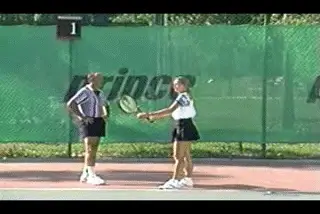
Hold the racket like a feather, and throw!
← Bounce at 10,000 FPS | Biomechanics Index | Height in Pro Tennis →